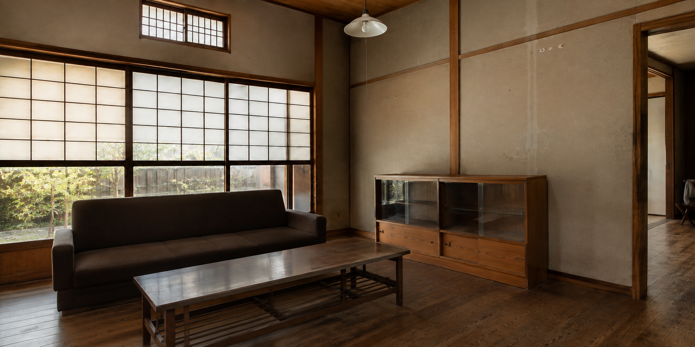

01 / PROJECT
既存の木部を活かしながら、
光と生活動線を整えた住宅内装。
- TYPE
- 住宅
- SCOPE
- 内装施工・木部施工・左官仕上げ
- MATERIAL
- 木材・左官材・金属

PROJECT STORY
依頼内容と提案依頼内容
既存の木の雰囲気を残しながら、リビングとダイニングが自然につながり、光を感じながら落ち着いて過ごせる空間にしたい、というご相談から始まりました。
提案・施工
梁や柱など、もともとある素材を活かしながら、壁面の色合い、木部の仕上げ、照明の位置、生活動線を整えました。
新しいものを加えすぎず、以前からそこにあったように自然になじむ内装を目指しています。
BEFORE / AFTER
施工前と施工後
PROJECT SUMMARY
施工を終えてこの計画では、建物が長い時間をかけて育んできた梁や柱の表情をできる限り残しながら、現在の暮らしに合う明るさと動線を整えることを大切にしました。新しい素材だけが目立たないよう、既存の木部に合わせて天井や床、壁面の色味と質感を一つずつ調整。塗り重ねたような深みのある壁面と、光をやわらかく受け止める木の仕上げによって、空間全体に静かな一体感をつくっています。また、日中に窓から入る自然光と夜間の照明、それぞれの見え方を確認し、光が強く当たりすぎる場所や暗く沈む場所が生まれないように配置を検討しました。部屋を移動するときの視線の抜けや家具を置いたあとの通りやすさにも配慮し、生活の動きを妨げない納まりを追求しています。古いものを単に残すのでも、すべてを新しく見せるのでもなく、もともとの空間が持つ落ち着きを活かしながら、使い続けるほど自然になじむ住まいを目指しました。